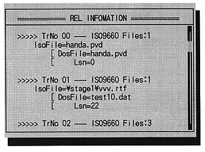
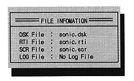

* FILE Information
Mode to view the currently set file information. When selected, a file information window opens in the center of the screen.

●Open CD Tray
Execute the actual CD drive tray open operation on the virtual CD emulator.
●Close CD Tray
Execute the actual CD drive tray close operation on the virtual CD emulator.
●Exit
Quit the virtual CD emulator.
】 After selecting, press any key to end the program.